Sastraku
Temukan buku wishlist-mu dan baca hanya di Sastraku!
Mencari sastra?
Temukan
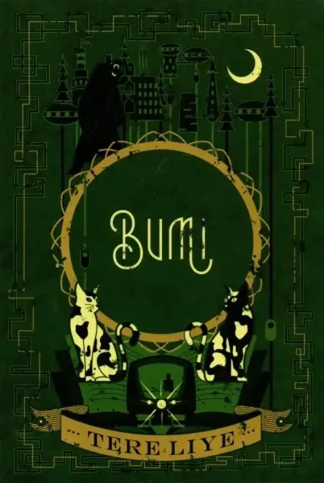
Tere Liye - Bumi vol.01 : Bumi
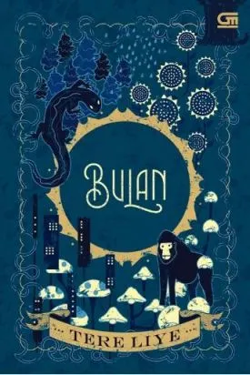
Tere Liye - Bumi vol.02 : Bulan
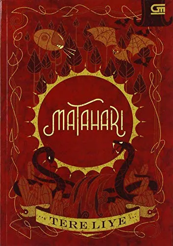
Tere Liye - Bumi vol.03 : Matahari
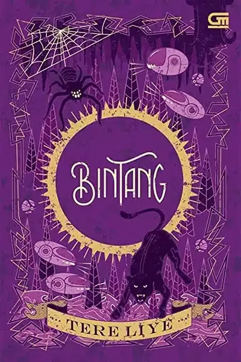
Tere Liye - Bumi vol.04 : Bintang
Tere Liye - Bumi vol.05 : Ceroz dan Batozar
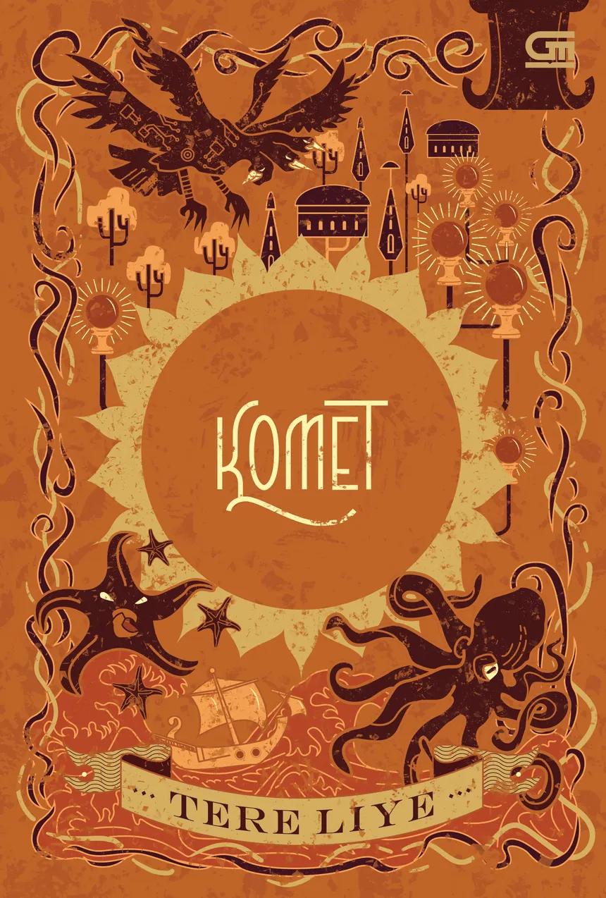
Tere Liye - Bumi vol.06 : Komet
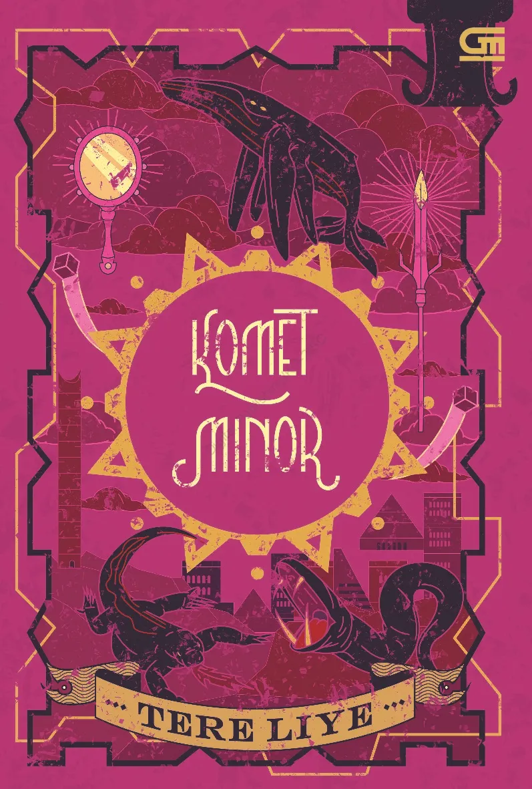
Tere Liye - Bumi vol.07 : Komet Minor
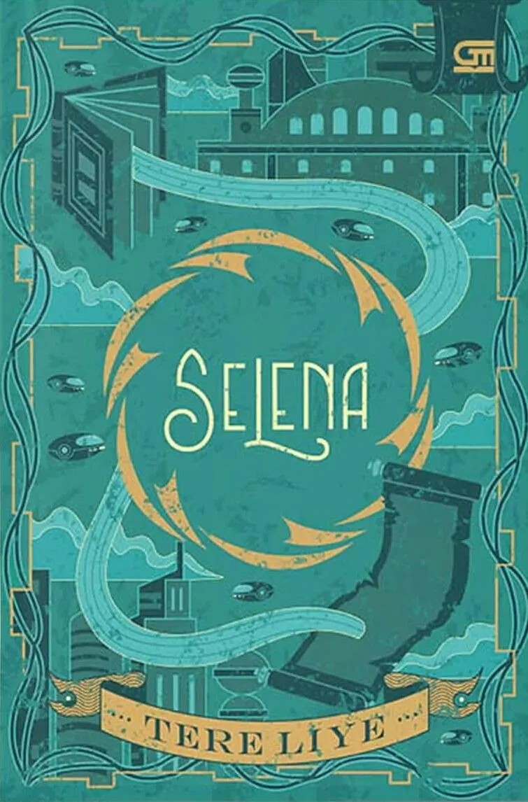
Tere Liye - Bumi vol.08 : Selena
Tere Liye - Bumi vol.09 : Nebula
Tere Liye - Bumi vol.10 : Lumpu
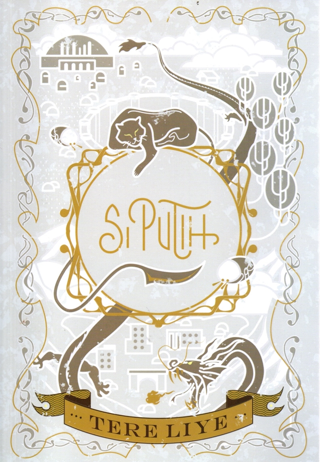
Tere Liye - Bumi vol.11 : Si Putih
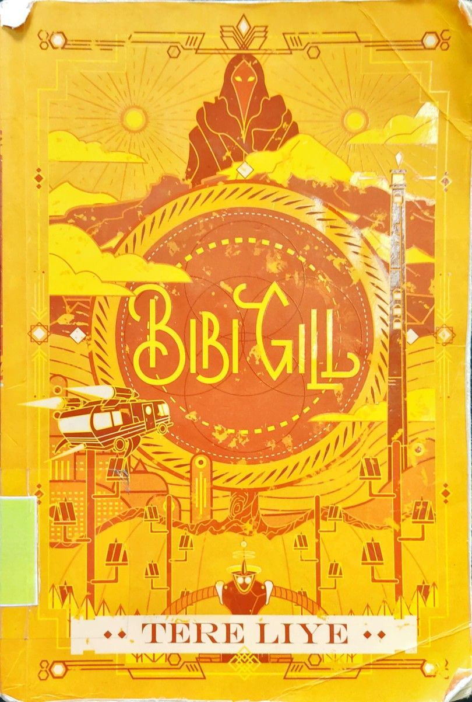
Tere Liye - Bumi vol.12 : Bibi Gill
Tere Liye - Bumi vol.13 : Saragas
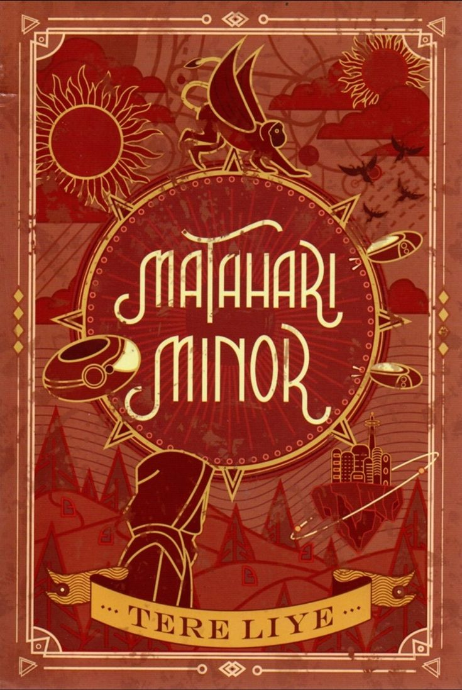
Tere Liye - Bumi vol.14 : Matahari Minor
Tere Liye - Bumi vol.15 : ILY
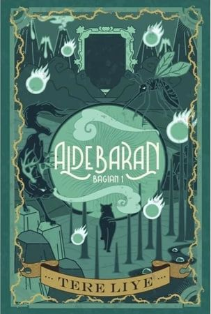
Tere Liye - Bumi vol.16 :Aldebaran: Bagian 1
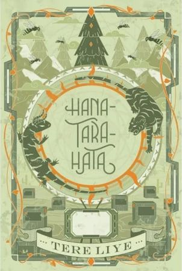
Tere Liye - Bumi vol.17 : Hana Tara Hata
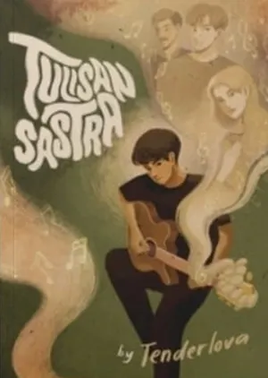
Tenderlova - Sastra universe.1 : Tulisan Sastra
Tenderlova - Sastra universe.2 : Narasi 2021
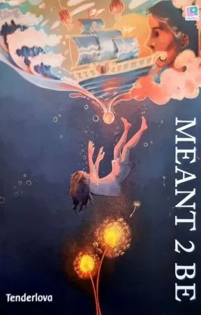
Tenderlova - Sastra universe.3 : Meant 2 be
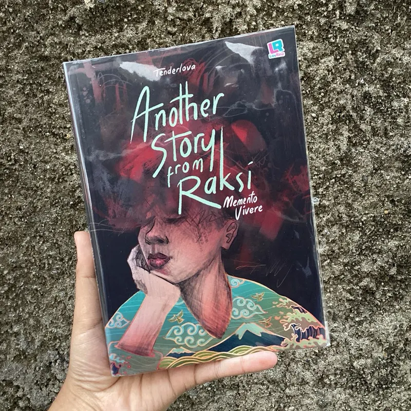
Tenderlova - Sastra universe.4 : Another story from Raksi, Memento Vivere
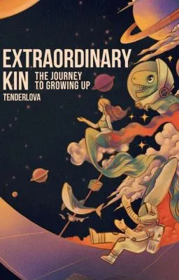
Tenderlova - Sastra universe.5 : Extraordinary Kin
Tenderlova - Sastra universe.6 : Kaleidoskop, The Wounded Soul
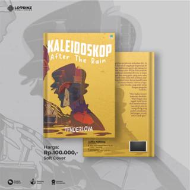
Tenderlova - Sastra universe.7 : Kaleidoskop, After Rain
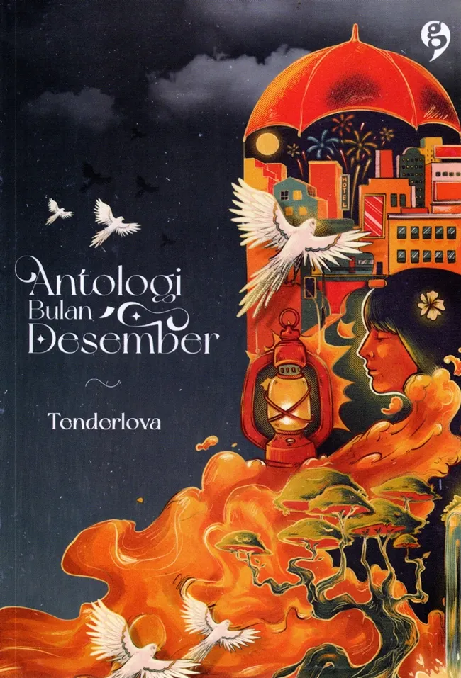
Tenderlova - Sastra universe.7 : Antologi Bulan Desember